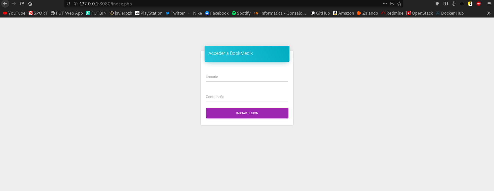
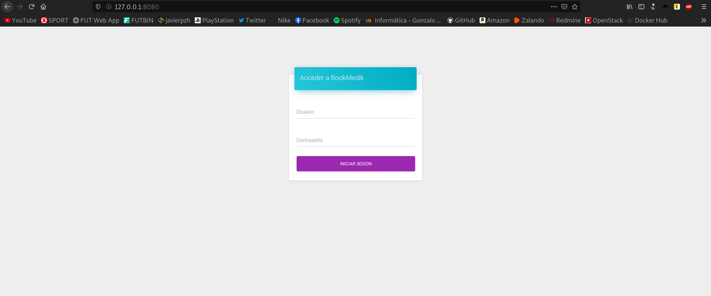
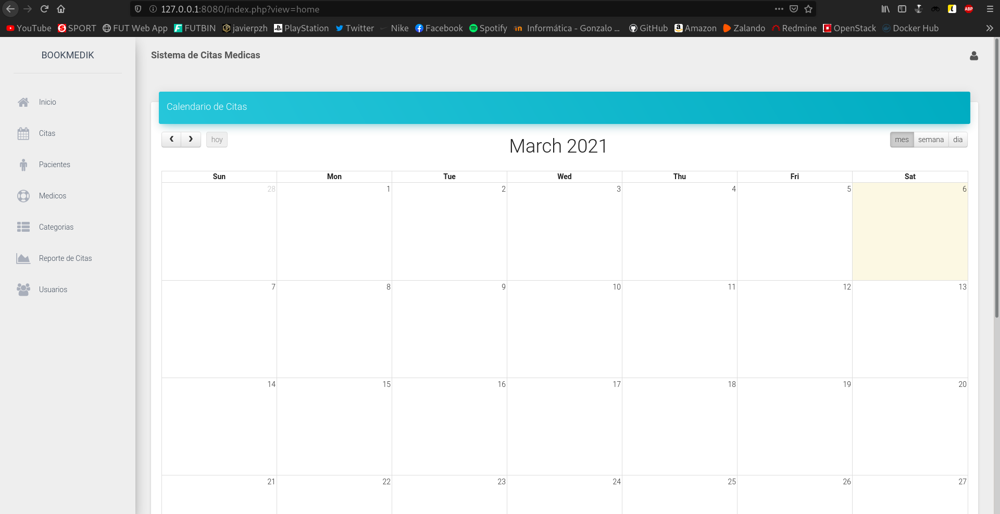
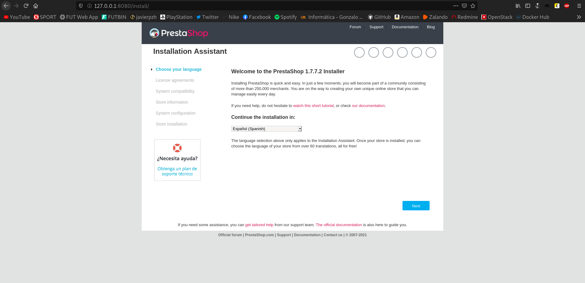
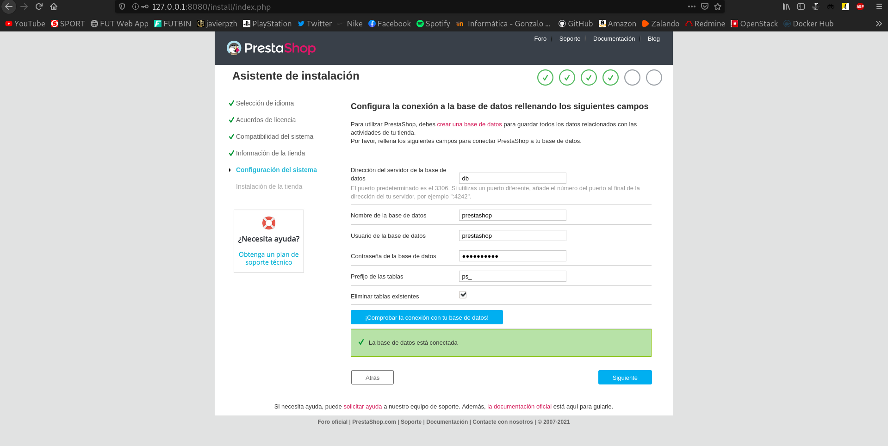
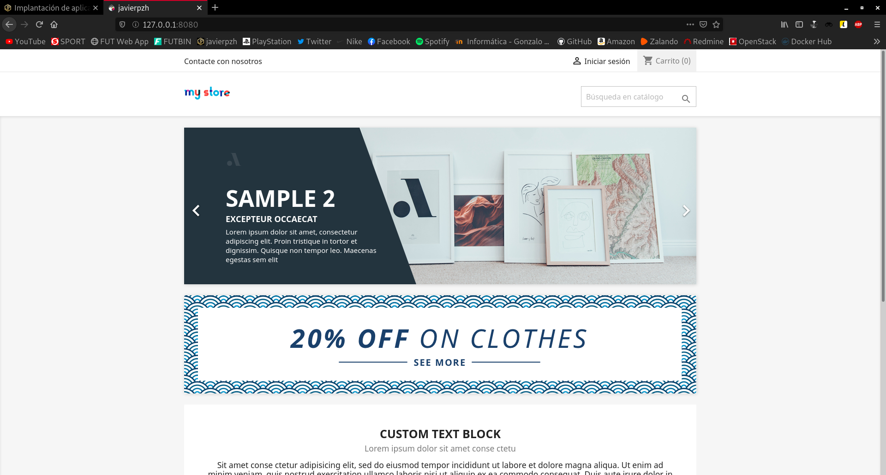
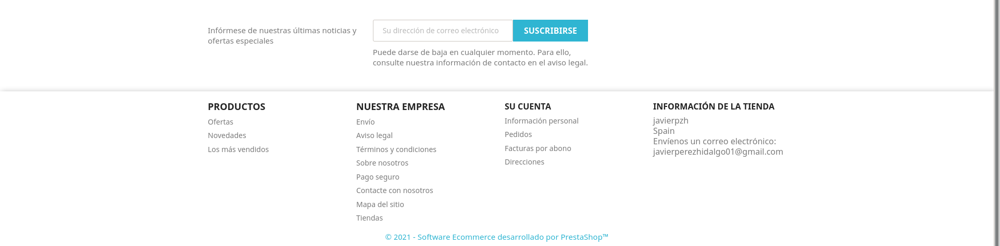
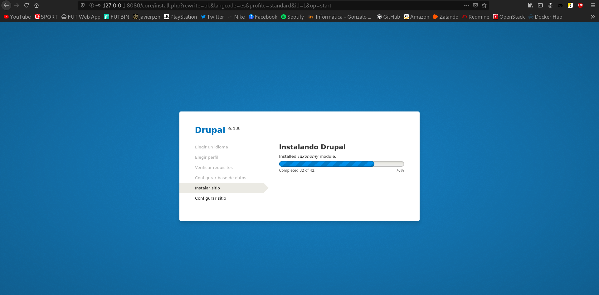
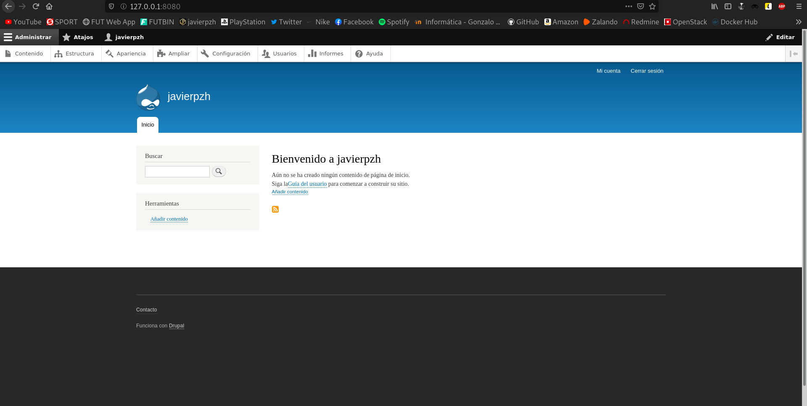

En este artículo voy a realizar el despliegue de varias aplicaciones web escritas en PHP en contenedores Docker.
Todos los ficheros necesarios y utilizados, se pueden encontrar en este repositorio de GitHub.
En todos los apartados utilizaremos dos directorios, el llamado build, destinado a la construcción, y el segundo directorio, deploy, utilizado para el despliegue.
Ejecución de la aplicación BookMedik
En este primer apartado, vamos a ver como sería el proceso para ejecutar la aplicación BookMedik en contenedores Docker.
En primer lugar, nos situamos en el directorio build y en él, clonaremos el siguiente repositorio que contiene la aplicación BookMedik.
Hecho esto, nos dirigiremos a nuestro directorio de despliegue, y en él crearemos nuestro fichero docker-compose.yaml, que inicialmente va a poseer este contenido:
version: "3.1"
services:
db:
container_name: bookmedik-mysql
image: mariadb
restart: always
environment:
MYSQL_DATABASE: bookmedik
MYSQL_USER: bookmedik
MYSQL_PASSWORD: bookmedik
MYSQL_ROOT_PASSWORD: javier
volumes:
- /home/javier/Docker/Volumes:/var/lib/mysql
Podemos apreciar como hemos definido el despliegue de un contenedor llamado bookmedik-mysql basado en una imagen mariadb. Como podremos imaginar, este contenedor será el encargado de ejecutar nuestra base de datos. Vamos a crearlo ejecutando el siguiente comando:
javier@debian:~/Docker/Implantacion-de-aplicaciones-web-PHP-en-Docker/Tarea1/deploy$ docker-compose up -d Creating bookmedik-mysql ... done
Bien, ya habríamos generado nuestro primer contenedor, ahora, necesitaremos ejecutar el siguiente script que se encargará de crear las tablas/datos imprescindibles para nuestra aplicación. Este script se encuentra dentro del repositorio clonado anteriormente y recibe el nombre schema.sql. Antes de volcar las instrucciones en nuestra base de datos, debemos comentar la siguiente línea que se encuentra al inicio de este script:
create database bookmedik;
Esto debemos hacerlo, ya que, al crear el primer contenedor que ejecuta MySQL, ya hemos creado una base de datos con este nombre.
Hecho esto, podríamos ejecutar el script:
javier@debian:~/Docker/Implantacion-de-aplicaciones-web-PHP-en-Docker/Tarea1/deploy$ cat ../build/bookmedik/schema.sql | docker exec -i bookmedik-mysql /usr/bin/mysql -u bookmedik --password=bookmedik bookmedik
En este punto, ya disponemos de nuestra base de datos totalmente operativa, por lo que tan sólo nos faltaría crear el contenedor que ejecutará la aplicación. Para ello, crearemos en el directorio build, el siguiente fichero Dockerfile:
FROM debian MAINTAINER Javier Pérez "javierperezhidalgo01@gmail.com" EXPOSE 80 ADD bookmedik /var/www/html/ ADD script.sh /usr/local/bin/ RUN apt-get update && apt-get install -y apache2 \ libapache2-mod-php7.3 \ php7.3 \ php7.3-mysql \ && apt-get clean \ && rm -rf /var/lib/apt/lists/* \ && chmod +x /usr/local/bin/script.sh ENV DATABASE_USER bookmedik ENV DATABASE_PASSWORD bookmedik ENV DATABASE_HOST db ENTRYPOINT ["script.sh"]
Por último, en la misma ruta, crearemos un fichero llamado script.sh con las siguientes líneas:
#!/bin/bash
sed -i 's/$this->user="root";/$this->user="'${DATABASE_USER}'";/g' /var/www/html/core/controller/Database.php
sed -i 's/$this->pass="";/$this->pass="'${DATABASE_PASSWORD}'";/g' /var/www/html/core/controller/Database.php
sed -i 's/$this->host="localhost";/$this->host="'${DATABASE_HOST}'";/g' /var/www/html/core/controller/Database.php
apache2ctl -D FOREGROUND
Esto nos ayudará a la hora de la asignación de variables.
Pues ya estaría todo listo, por lo que procederíamos a crear la imagen que posteriormente ejecutará el contenedor de la aplicación:
javier@debian:~/Docker/Implantacion-de-aplicaciones-web-PHP-en-Docker/Tarea1/build$ docker build -t javierpzh/bookmedik:v1 . Sending build context to Docker daemon 5.774MB Step 1/10 : FROM debian ---> 5890f8ba95f6 Step 2/10 : MAINTAINER Javier Pérez "javierperezhidalgo01@gmail.com" ---> Running in 597b0e74a1af Removing intermediate container 597b0e74a1af ---> 2bd74e1c46ca Step 3/10 : EXPOSE 80 ---> Running in a626d30acc3a Removing intermediate container a626d30acc3a ---> d5e3b4c5a31a Step 4/10 : ADD bookmedik /var/www/html/ ---> e3d721661a67 Step 5/10 : ADD script.sh /usr/local/bin/ ---> 77688c1696ce Step 6/10 : RUN apt-get update && apt-get install -y apache2 libapache2-mod-php7.3 php7.3 php7.3-mysql && apt-get clean && rm -rf /var/lib/apt/lists/* && chmod +x /usr/local/bin/script.sh ---> Running in 5c9ea292ceb8 ... ---> 217f10aad8e5 Step 7/10 : ENV DATABASE_USER bookmedik ---> Running in 33177718555b Removing intermediate container 33177718555b ---> 5c1d72d0d8f7 Step 8/10 : ENV DATABASE_PASSWORD bookmedik ---> Running in a81a444faa65 Removing intermediate container a81a444faa65 ---> e50d8477e7ae Step 9/10 : ENV DATABASE_HOST db ---> Running in 6d5caa1033d8 Removing intermediate container 6d5caa1033d8 ---> 7a385cbb8132 Step 10/10 : ENTRYPOINT ["script.sh"] ---> Running in 4b6348f07a94 Removing intermediate container 4b6348f07a94 ---> 58e4b5c7dcee Successfully built 58e4b5c7dcee Successfully tagged javierpzh/bookmedik:v1
Finalizado el proceso, vamos a ver que efectivamente nos ha creado la nueva imagen:
javier@debian:~/Docker/Implantacion-de-aplicaciones-web-PHP-en-Docker/Tarea1/build$ docker images REPOSITORY TAG IMAGE ID CREATED SIZE javierpzh/bookmedik v1 58e4b5c7dcee 33 seconds ago 251MB
¡Bien! Disponemos de la nueva imagen, por lo que tan sólo nos quedaría crear el contenedor que ejecutará BookMedik. Para ello, añadiremos al fichero docker-compose.yaml, que creamos anteriormente en el directorio deploy, el siguiente bloque:
bookmedik:
container_name: bookmedik
image: javierpzh/bookmedik:v1
restart: always
ports:
- 8080:80
volumes:
- /home/javier/Docker/Volumes:/var/log/apache2
Podemos apreciar como hemos definido un nuevo despliegue, en este caso, se trata de un contenedor llamado bookmedik basado en la imagen creada, y que va a mapear puertos para que podamos acceder desde nuestro navegador en el puerto 8080. Vamos a crearlo ejecutando el siguiente comando:
javier@debian:~/Docker/Implantacion-de-aplicaciones-web-PHP-en-Docker/Tarea1/deploy$ docker-compose up -d Creating bookmedik ... Creating bookmedik ... done
Bien, ya habríamos generado nuestro segundo contenedor, por lo que, en teoría, ya dispondríamos de nuestra aplicación. Antes de dirigirnos a nuestro navegador, vamos a listar los contenedores que poseemos activos:
javier@debian:~/Docker/Implantacion-de-aplicaciones-web-PHP-en-Docker/Tarea1/deploy$ docker ps CONTAINER ID IMAGE COMMAND CREATED STATUS PORTS NAMES 5dc207e7d56a javierpzh/bookmedik:v1 "script.sh" 35 seconds ago Up 33 seconds 0.0.0.0:8080->80/tcp bookmedik aef84a1160f0 mariadb "docker-entrypoint.s…" 5 minutes ago Up 5 minutes 3306/tcp bookmedik-mysql
Efectivamente se están ejecutando los dos contenedores, por lo que es el momento de a acceder a la dirección 127.0.0.1:8080:

Vamos a loguearnos mediante las credenciales por defecto: admin/admin.

¡Bien! Vemos como nos muestra la aplicación BookMedik por lo que habríamos finalizado este apartado.
Creando la imagen de BookMedik a partir de la imagen PHP
En este apartado, vamos a realizar un proceso parecido al anterior, pero en este caso, la imagen del contenedor que ejecutará la aplicación, estará creada a partir de la imagen oficial PHP.
Para llevar a cabo este ejercicio, podemos copiar las carpetas build y deploy que hemos utilizado en el apartado anterior, ya que vamos a hacer unas pequeñas modificaciones, pero gran parte será reutilizada.
En primer lugar, editaremos el fichero Dockerfile, y quedará de esta manera:
FROM php:7.4-apache MAINTAINER Javier Pérez "javierperezhidalgo01@gmail.com" EXPOSE 80 ADD bookmedik /var/www/html/ ADD script.sh /usr/local/bin/ RUN docker-php-ext-install mysqli \ && chmod +x /usr/local/bin/script.sh ENV DATABASE_USER bookmedik ENV DATABASE_PASSWORD bookmedik ENV DATABASE_HOST db ENTRYPOINT ["script.sh"]
Podemos apreciar como ahora utilizaremos como imagen base la oficial PHP. Hecho esto, construiremos la nueva imagen. En mi caso, le establezco como nombre la versión 2 (v2):
javier@debian:~/Docker/Implantacion-de-aplicaciones-web-PHP-en-Docker/Tarea2/build$ docker build -t javierpzh/bookmedik:v2 . Sending build context to Docker daemon 5.774MB Step 1/10 : FROM php:7.4-apache 7.4-apache: Pulling from library/php 45b42c59be33: Already exists 366d949cba16: Already exists 4c65628244f3: Already exists 79a8e4ec25c6: Already exists 3512b0c25baf: Already exists a983b5b9a384: Already exists 0def93a72fb4: Already exists b463e75d679a: Already exists 86780b697834: Already exists 7df64f4812c2: Already exists 59f175c32a30: Already exists 5363b603851d: Already exists 93fcdb189245: Already exists Digest: sha256:e12c1c85cb4b5cd1f656368502be1f927b3d5e4c8a55960b6c0b5795a491aa6a Status: Downloaded newer image for php:7.4-apache ---> 82e6dd286f92 Step 2/10 : MAINTAINER Javier Pérez "javierperezhidalgo01@gmail.com" ---> Running in d13aaa14c768 Removing intermediate container d13aaa14c768 ---> af250719abe4 Step 3/10 : EXPOSE 80 ---> Running in c2c5bcfa655d Removing intermediate container c2c5bcfa655d ---> 131de1a87b20 Step 4/10 : ADD bookmedik /var/www/html/ ---> 13cdcb0d4150 Step 5/10 : ADD script.sh /usr/local/bin/ ---> 62204ccc0568 Step 6/10 : RUN docker-php-ext-install mysqli && chmod +x /usr/local/bin/script.sh ---> Running in feb5c30cd507 ... ---> 9400396eb037 Step 7/10 : ENV DATABASE_USER bookmedik ---> Running in 6d12571c3783 Removing intermediate container 6d12571c3783 ---> 4f1c9ea1b416 Step 8/10 : ENV DATABASE_PASSWORD bookmedik ---> Running in 23fb39232674 Removing intermediate container 23fb39232674 ---> bc299d3eacac Step 9/10 : ENV DATABASE_HOST db ---> Running in 8828925c295b Removing intermediate container 8828925c295b ---> 19f8b95c983d Step 10/10 : ENTRYPOINT ["script.sh"] ---> Running in f9db3c9cbc9c Removing intermediate container f9db3c9cbc9c ---> cbf2c1f07b02 Successfully built cbf2c1f07b02 Successfully tagged javierpzh/bookmedik:v2
Finalizado el proceso, vamos a ver que efectivamente nos ha creado la nueva imagen:
javier@debian:~/Docker/Implantacion-de-aplicaciones-web-PHP-en-Docker/Tarea2/build$ docker images REPOSITORY TAG IMAGE ID CREATED SIZE javierpzh/bookmedik v2 cbf2c1f07b02 1 minute ago 420MB javierpzh/bookmedik v1 58e4b5c7dcee About an hour ago 251MB
Vemos como nos ha creado una nueva versión de nuestra imagen, por lo que ahora, tan sólo nos quedaría modificar en el fichero docker-compose.yaml, el bloque relativo al contenedor que ejecutará BookMedik, e indicar que haga uso de esta imagen. El contenido total del fichero será el siguiente:
version: "3.1"
services:
db:
container_name: bookmedik-mysql
image: mariadb
restart: always
environment:
MYSQL_DATABASE: bookmedik
MYSQL_USER: bookmedik
MYSQL_PASSWORD: bookmedik
MYSQL_ROOT_PASSWORD: javier
volumes:
- /home/javier/Docker/Volumes:/var/lib/mysql
bookmedik:
container_name: bookmedik
image: javierpzh/bookmedik:v2
restart: always
ports:
- 8080:80
volumes:
- /home/javier/Docker/Volumes:/var/log/apache2
Realizamos el despliegue:
javier@debian:~/Docker/Implantacion-de-aplicaciones-web-PHP-en-Docker/Tarea2/deploy$ docker-compose up -d Recreating bookmedik ... Recreating bookmedik ... done
Ya habríamos reconstruido el contenedor de la aplicación. Antes de dirigirnos a nuestro navegador, vamos a listar los contenedores que poseemos activos:
javier@debian:~/Docker/Implantacion-de-aplicaciones-web-PHP-en-Docker/Tarea2/deploy$ docker ps CONTAINER ID IMAGE COMMAND CREATED STATUS PORTS NAMES fd625dd2f9f9 javierpzh/bookmedik:v2 "script.sh" About a minute ago Up About a minute 0.0.0.0:8080->80/tcp bookmedik aef84a1160f0 mariadb "docker-entrypoint.s…" About an hour ago Up About an hour 3306/tcp bookmedik-mysql
Efectivamente se están ejecutando los dos contenedores, y podemos observar, como hemos cambiado el contenedor que ejecuta la aplicación mientras que el contenedor que ejecuta la base de datos, sigue siendo el mismo que el del apartado anterior.
Es el momento de a acceder a la dirección 127.0.0.1:8080:

Vamos a loguearnos mediante las credenciales por defecto: admin/admin.

¡Bien! Vemos como nos sigue mostrando la aplicación BookMedik, pero ahora está ejecutándose en un contenedor creado a partir de una imagen distinta, en esta caso, la oficial de PHP.
Ejecución de la aplicación BookMedik en Nginx
En este tercer apartado vamos a ver como volver a desplegar la aplicación BookMedik con Docker, pero esta vez, utilizando tres contenedores:
- bookmedik-mysql: contenedor basado en una imagen mariadb, que como ya se puede intuir ejecutará nuestra base de datos.
- nginx: contenedor basado en una imagen personalizada, basada en una imagen nginx, que ejecutará la aplicación.
- bookmedik-php: contenedor basado en una imagen PHP, que ejecutará el servidor PHP-FPM.
El "escenario" sobre el que trabajaremos es algo así:
javier@debian:~/Docker/Implantacion-de-aplicaciones-web-PHP-en-Docker/Tarea3$ ls -l total 0 drwxr-xr-x 3 javier javier 78 mar 7 00:15 build-nginx drwxr-xr-x 2 javier javier 24 mar 7 00:01 build-php drwxr-xr-x 2 javier javier 33 mar 7 00:15 deploy
En primer lugar, nos situamos en el directorio build-nginx, ya que en él, es donde realizaremos la mayor parte del trabajo, ya que poseemos tres ficheros además del repositorio de la aplicación:
javier@debian:~/Docker/Implantacion-de-aplicaciones-web-PHP-en-Docker/Tarea3/build-nginx$ ls -l total 12 drwxr-xr-x 7 javier javier 166 mar 6 19:41 bookmedik -rw-r--r-- 1 javier javier 514 mar 7 00:02 default.conf -rw-r--r-- 1 javier javier 336 mar 7 00:15 Dockerfile -rw-r--r-- 1 javier javier 387 mar 7 00:15 script.sh
Vamos a empezar viendo el aspecto del fichero Dockerfile:
FROM nginx MAINTAINER Javier Pérez "javierperezhidalgo01@gmail.com" EXPOSE 80 ADD default.conf /etc/nginx/conf.d/default.conf ADD script.sh /usr/local/bin/ RUN chmod +x /usr/local/bin/script.sh ENV DATABASE_USER bookmedik ENV DATABASE_PASSWORD bookmedik ENV DATABASE_HOST db ENTRYPOINT ["script.sh"]
Seguiremos con el fichero script.sh:
#!/bin/bash sed -i "s/$this->user="root";/$this->user="$DATABASE_USER";/g" /bookmedik/core/controller/Database.php sed -i "s/$this->pass="";/$this->pass="$DATABASE_PASSWORD";/g" /bookmedik/core/controller/Database.php sed -i "s/$this->host="localhost";/$this->host="$DATABASE_HOST";/g" /bookmedik/core/controller/Database.php nginx -g 'daemon off;'
Y para finalizar, el fichero default.conf que será el fichero de configuración de nuestro virtualhost de Nginx:
server {
index index.php index.html;
server_name www.bookmedik.com;
error_log /var/log/nginx/error.log;
access_log /var/log/nginx/access.log;
root /bookmedik;
location ~ \.php$ {
try_files $uri =404;
fastcgi_split_path_info ^(.+\.php)(/.+)$;
fastcgi_pass php:9000;
fastcgi_index index.php;
include fastcgi_params;
fastcgi_param SCRIPT_FILENAME $document_root$fastcgi_script_name;
fastcgi_param PATH_INFO $fastcgi_path_info;
}
}
Visto todo el contenido del directorio build-nginx, procederemos a crear la imagen:
javier@debian:~/Docker/Implantacion-de-aplicaciones-web-PHP-en-Docker/Tarea3/build-nginx$ docker build -t javierpzh/nginx:v1 . Sending build context to Docker daemon 5.775MB Step 1/10 : FROM nginx ---> 35c43ace9216 Step 2/10 : MAINTAINER Javier Pérez "javierperezhidalgo01@gmail.com" ---> Running in b3fed2b62aa9 Removing intermediate container b3fed2b62aa9 ---> 58c5819c8161 Step 3/10 : EXPOSE 80 ---> Running in fb032eabf6bf Removing intermediate container fb032eabf6bf ---> f6d8519513c1 Step 4/10 : ADD default.conf /etc/nginx/conf.d/default.conf ---> 3db249b151cf Step 5/10 : ADD script.sh /usr/local/bin/ ---> 40bd15c1b5c9 Step 6/10 : RUN chmod +x /usr/local/bin/script.sh ---> Running in 08c8bbd4a4e5 Removing intermediate container 08c8bbd4a4e5 ---> 67da303c3bf2 Step 7/10 : ENV DATABASE_USER bookmedik ---> Running in 0d4bb6c08356 Removing intermediate container 0d4bb6c08356 ---> ccd372739104 Step 8/10 : ENV DATABASE_PASSWORD bookmedik ---> Running in 188eee28ffe8 Removing intermediate container 188eee28ffe8 ---> 35dc8e23b27d Step 9/10 : ENV DATABASE_HOST db ---> Running in 2475c18ea322 Removing intermediate container 2475c18ea322 ---> 430ae7eb838f Step 10/10 : ENTRYPOINT ["script.sh"] ---> Running in 5d6b4466a190 Removing intermediate container 5d6b4466a190 ---> 8f6aa9a30207 Successfully built 8f6aa9a30207 Successfully tagged javierpzh/nginx:v1
En el directorio build-php solo nos encontraremos con el fichero Dockerfile, que posee este aspecto:
FROM php:7.4-apache MAINTAINER Javier Pérez "javierperezhidalgo01@gmail.com" RUN docker-php-ext-install mysqli
Construimos la nueva imagen:
javier@debian:~/Docker/Implantacion-de-aplicaciones-web-PHP-en-Docker/Tarea3/build-php$ docker build -t javierpzh/php-fpm:v1 . Sending build context to Docker daemon 2.048kB Step 1/3 : FROM php:7.4-apache ---> 82e6dd286f92 Step 2/3 : MAINTAINER Javier Pérez "javierperezhidalgo01@gmail.com" ---> Using cache ---> af250719abe4 Step 3/3 : RUN docker-php-ext-install mysqli ---> Running in 4175235d4ec5 ... ---> e34648669ee1 Successfully built e34648669ee1 Successfully tagged javierpzh/php-fpm:v1
En este punto, ya tendríamos las imágenes necesarias para poner en marcha nuestra aplicación, por lo que nos trasladamos al directorio deploy y creamos el fichero docker.compose.yaml que definirá el escenario:
version: "3.1"
services:
db:
container_name: bookmedik-mysql
image: mariadb
restart: always
environment:
MYSQL_DATABASE: bookmedik
MYSQL_USER: bookmedik
MYSQL_PASSWORD: bookmedik
MYSQL_ROOT_PASSWORD: javier
volumes:
- /home/javier/Docker/Volumes:/var/lib/mysql
bookmedik:
container_name: bookmedik
image: javierpzh/nginx:v1
restart: always
ports:
- 8080:80
volumes:
- /home/javier/Docker/Implantacion-de-aplicaciones-web-PHP-en-Docker/Tarea3/build-nginx/bookmedik/:/bookmedik
php:
container_name: bookmedik-php
image: javierpzh/php-fpm:v1
restart: always
volumes:
- /home/javier/Docker/Implantacion-de-aplicaciones-web-PHP-en-Docker/Tarea3/build-nginx/bookmedik/:/bookmedik
Una vez creado, desplegamos los contenedores:
javier@debian:~/Docker/Implantacion-de-aplicaciones-web-PHP-en-Docker/Tarea3/deploy$ docker-compose up -d bookmedik-mysql is up-to-date Recreating bookmedik ... done Creating bookmedik-php ... done
Es el momento de a acceder a la dirección 127.0.0.1:8080:

Aún no he conseguido solventar este problema.
Ejecución del CMS Prestashop
En este nuevo apartado vamos a llevar a cabo el despliegue del CMS PHP llamado Prestashop.
Como consecuencia, poseeremos dos contenedores, uno que ejecutará la base de datos, y otro que ejecutará la aplicación. Este último estará basado en una imagen personalizada, que vamos a crear a partir de la imagen oficial PHP.
Para ello, en nuestro directorio build generaremos el siguiente fichero Dockerfile:
FROM php:7.4-apache MAINTAINER Javier Pérez "javierperezhidalgo01@gmail.com" EXPOSE 80 WORKDIR /var/www/html/ ADD script.sh /usr/local/bin/ RUN apt-get update \ && apt-get -y install \ unzip wget \ zlib1g-dev libzip-dev libicu-dev libpng-dev \ && wget https://download.prestashop.com/download/releases/prestashop_1.7.7.2.zip -P /opt/ \ && docker-php-ext-install zip gd pdo_mysql intl \ && apt-get clean \ && rm -rf /var/lib/apt/lists/* \ && a2enmod rewrite \ && chmod +x /usr/local/bin/script.sh ENTRYPOINT ["script.sh"]
También debemos crear el fichero script.sh:
#!/bin/bash mv /opt/prestashop_1.7.7.2.zip /var/www/html/ unzip prestashop_1.7.7.2.zip unzip -o prestashop.zip rm -rf prestashop.zip prestashop_1.7.7.2.zip chown -R www-data:www-data /var/www/html apache2ctl -D FOREGROUND
Una vez poseemos ambos archivos, es hora de construir la imagen que utilizará el contenedor de nuestra aplicación:
javier@debian:~/Docker/Implantacion-de-aplicaciones-web-PHP-en-Docker/Tarea4/build$ docker build -t javierpzh/prestashop:v1 . Sending build context to Docker daemon 3.584kB Step 1/7 : FROM php:7.4-apache ---> 82e6dd286f92 Step 2/7 : MAINTAINER Javier Pérez "javierperezhidalgo01@gmail.com" ---> Using cache ---> af250719abe4 Step 3/7 : EXPOSE 80 ---> Using cache ---> 131de1a87b20 Step 4/7 : WORKDIR /var/www/html/ ---> Running in 52f2af2bc8d6 Removing intermediate container 52f2af2bc8d6 ---> 2f03fc19c53d Step 5/7 : ADD script.sh /usr/local/bin/ ---> 00800fe4c3a3 Step 6/7 : RUN apt-get update && apt-get -y install unzip wget zlib1g-dev libzip-dev libicu-dev libpng-dev && wget https://download.prestashop.com/download/releases/prestashop_1.7.7.2.zip -P /opt/ && docker-php-ext-install zip gd pdo_mysql intl && apt-get clean && rm -rf /var/lib/apt/lists/* && a2enmod rewrite && chmod +x /usr/local/bin/script.sh ---> Running in bffe857f3412 ... ---> 2f9eb9bb9d47 Step 7/7 : ENTRYPOINT ["script.sh"] ---> Running in 091a0d754fdf Removing intermediate container 091a0d754fdf ---> bfbc6637a891 Successfully built bfbc6637a891 Successfully tagged javierpzh/prestashop:v1
Finalizada la construcción de la imagen, nos situaremos en el directorio deploy y generaremos el fichero docker-compose.yaml que será el encargado de crear los distintos contenedores:
version: "3.1"
services:
db:
container_name: prestashop-mysql
image: mariadb
restart: always
environment:
MYSQL_DATABASE: prestashop
MYSQL_USER: prestashop
MYSQL_PASSWORD: prestashop
MYSQL_ROOT_PASSWORD: javier
volumes:
- /home/javier/Docker/Volumes/tarea4/db:/var/lib/mysql
prestashop:
container_name: prestashop
image: javierpzh/prestashop:v1
restart: always
ports:
- 8080:80
volumes:
- /home/javier/Docker/Volumes/tarea4/app:/var/www/html
Podemos apreciar en él, como también lo hemos configurado, para que la información de nuestra aplicación sea persistente, es decir, que no se pierda a la hora de destruir los contenedores.
Hecho esto, ya podemos construir los contenedores:
javier@debian:~/Docker/Implantacion-de-aplicaciones-web-PHP-en-Docker/Tarea4/deploy$ docker-compose up -d Creating prestashop-mysql ... done Creating prestashop ... done
Es el momento de a acceder a la dirección 127.0.0.1:8080:

Podemos ver como nos muestra el instalador de Prestashop.
Conectamos la aplicación al contenedor que se encuentra ejecutando la base de datos:

Y terminada la instalación, podremos ver nuestro CMS listo:


Para finalizar, vamos a destruir los contenedores y los volveremos a generar, para ver como seguimos poseyendo la información:
javier@debian:~/Docker/Implantacion-de-aplicaciones-web-PHP-en-Docker/Tarea4/deploy$ docker rm -f prestashop prestashop-mysql prestashop prestashop-mysql javier@debian:~/Docker/Implantacion-de-aplicaciones-web-PHP-en-Docker/Tarea4/deploy$ docker-compose up -d Creating prestashop-mysql ... done Creating prestashop ... done
Accedemos de nuevo a la dirección 127.0.0.1:8080:
¡Bien! Podemos ver como nuestra aplicación sigue manteniendo los datos de nuestra tienda, por lo que habría terminado el proceso.
Ejecución del CMS Drupal a partir de su imagen oficial
En este último apartado vamos a ver como desplegar el CMS PHP llamado Drupal.
Poseeremos dos contenedores, uno que ejecutará la base de datos, y otro en el que se ejecutará la aplicación. Este último estará basado en la imagen oficial de Drupal.
Para ello, en nuestro directorio deploy generaremos el siguiente fichero docker-compose.yaml:
version: "3.1"
services:
db:
container_name: drupal-mysql
image: mariadb
restart: always
environment:
MYSQL_DATABASE: drupal
MYSQL_USER: drupal
MYSQL_PASSWORD: drupal
MYSQL_ROOT_PASSWORD: javier
volumes:
- /home/javier/Docker/Volumes/tarea5/drupal/db:/var/lib/mysql
drupal:
container_name: drupal
image: drupal
restart: always
ports:
- 8080:80
volumes:
- /var/www/html/modules
- /var/www/html/profiles
- /var/www/html/themes
- /var/www/html/sites
Una vez creado el fichero, podríamos desplegar nuestro escenario y por tanto, crear nuestros contenedores.
javier@debian:~/Docker/Implantacion-de-aplicaciones-web-PHP-en-Docker/Tarea5/deploy$ docker-compose up -d Pulling drupal (drupal:)... latest: Pulling from library/drupal 45b42c59be33: Already exists 366d949cba16: Already exists 4c65628244f3: Already exists 79a8e4ec25c6: Already exists 3512b0c25baf: Already exists a983b5b9a384: Already exists 0def93a72fb4: Already exists 8b8bec9fa383: Pull complete 80713ac3f2c7: Pull complete 549982e9dd23: Pull complete 6d487548f700: Pull complete ee1dd2a59f0a: Pull complete a92ec02c1897: Pull complete a880c8e72363: Pull complete 49a0baa978da: Pull complete f15ffc6b3e10: Pull complete 7317421d31fe: Pull complete e3f350043ad2: Pull complete Digest: sha256:347d566bb770c27dabc8de84f7d9996157e9f9e26fd84ca1637df59ec24b12e1 Status: Downloaded newer image for drupal:latest Creating drupal ... done Creating drupal-mysql ... done
Es el momento de a acceder a la dirección 127.0.0.1:8080:

Podemos ver como nos muestra el instalador de Drupal, por lo que continuamos el proceso indicando las credenciales de nuestra base de datos:

Esperamos que terminen de instalarse los distintos componentes de Drupal:

Y terminada la instalación, ya podríamos disfruta de nuestro CMS:

¡Bien! Ya habríamos terminado de desplegar Drupal en contenedores Docker, y con ello este apartado y también el post en sí.